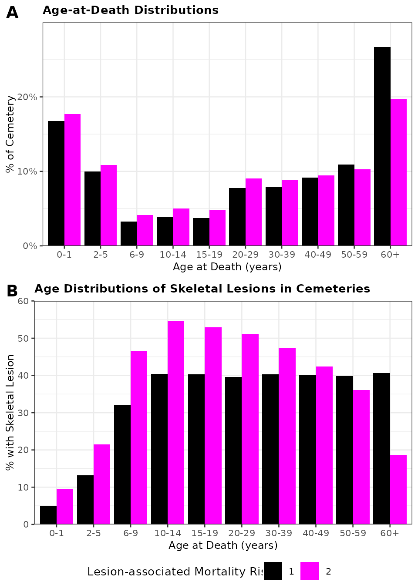
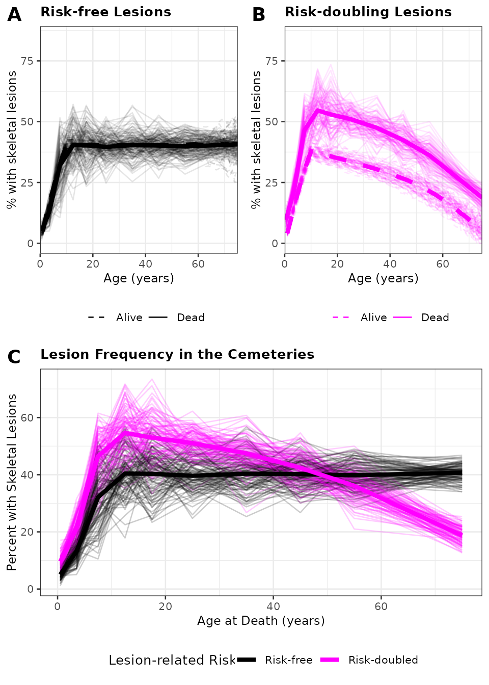
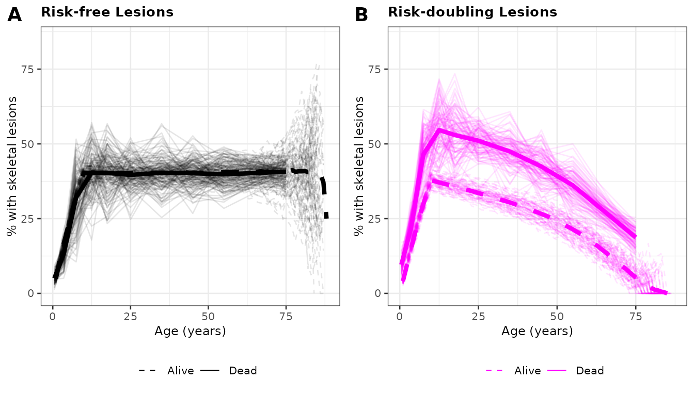
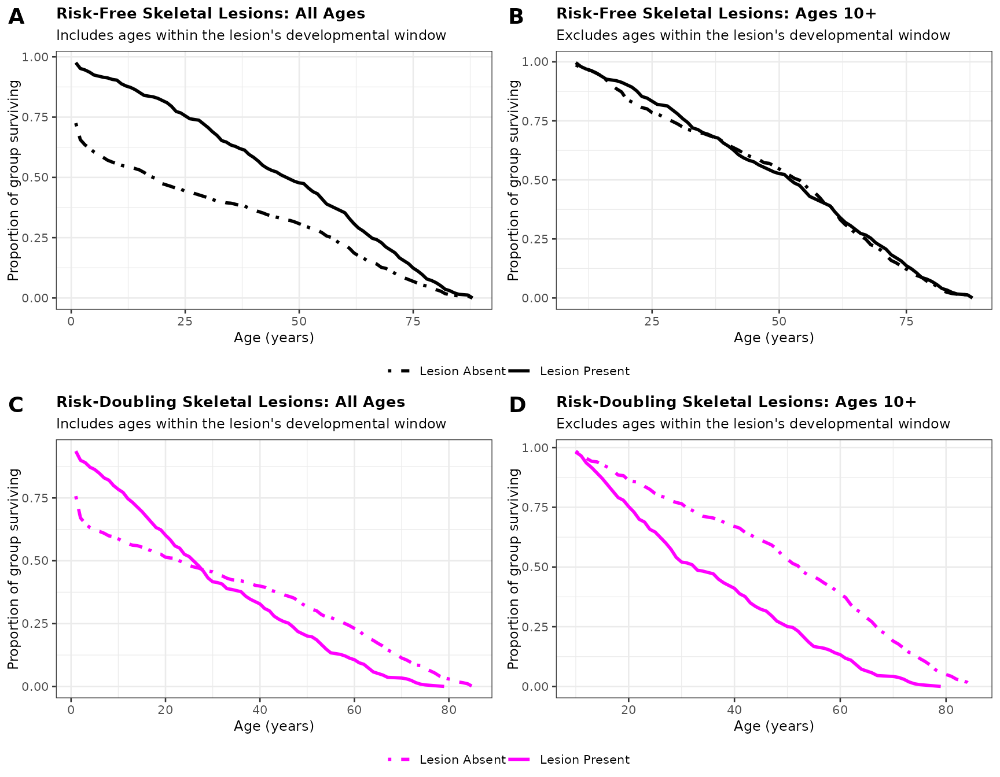

Known Unknowns: Replicating the Main Analysis
Amy S. Anderson
2026-03-13
known-unknowns-replication.RmdThis vignette replicates the main analysis from “Known unknowns and
the osteological paradox: Why bioarchaeology needs agent-based models”
(Anderson and DeWitte) using the persephone package.
The Persephone agent-based model simulates skeletal assemblage data and tests the accuracy of survival analysis under specific assumptions about the data generating processes. All agents are born as a starting cohort, face annual risks of lesion formation and Siler-model mortality, and may experience different mortality risk depending on lesion status.
Run Simulations
We simulate 100 cemeteries for each of two scenarios:
- Risk-free (RMR = 1): skeletal lesions have no association with mortality risk.
- Risk-doubled (RMR = 2): skeletal lesions are associated with double the baseline mortality risk.
This produces simulated data on lesion status and age at death for 200,000 individuals total.
nreps <- 100
params <- get_default_params()
# Helper to run a scenario (fixed params, varying RMR)
run_scenario <- function(params, rmr, nreps) {
params$relative_mortality_risk <- rmr
results <- lapply(1:nreps, function(i) {
out <- do.call(Simulate_Cemetery, params)
out$individual_outcomes$rep <- i
out$survivors$rep <- i
out
})
list(
cemetery = bind_rows(lapply(results, `[[`, "individual_outcomes")),
survivors = bind_rows(lapply(results, `[[`, "survivors"))
)
}
set.seed(42)
results_rmr1 <- run_scenario(params, rmr = 1, nreps = nreps)
results_rmr2 <- run_scenario(params, rmr = 2, nreps = nreps)Combine and Prepare Data
# Cemetery data (individual-level outcomes)
sim_data <- bind_rows(
results_rmr1$cemetery %>% mutate(relative_mortality_risk = 1),
results_rmr2$cemetery %>% mutate(relative_mortality_risk = 2)
) %>%
mutate(
scenario = if_else(relative_mortality_risk == 1, "Risk-free", "Risk-doubled"),
Age_Interval = factor(case_when(
age < 2 ~ "0-1",
age >= 2 & age < 6 ~ "2-5",
age >= 6 & age < 10 ~ "6-9",
age >= 10 & age < 15 ~ "10-14",
age >= 15 & age < 20 ~ "15-19",
age >= 20 & age < 30 ~ "20-29",
age >= 30 & age < 40 ~ "30-39",
age >= 40 & age < 50 ~ "40-49",
age >= 50 & age < 60 ~ "50-59",
age >= 60 ~ "60+"
), levels = c("0-1", "2-5", "6-9", "10-14", "15-19",
"20-29", "30-39", "40-49", "50-59", "60+")),
mortality = "Coale Demeny West F5",
relative_risk = as.factor(relative_mortality_risk)
)
# Survivor data (living cohort at each timestep)
sim_survivors <- bind_rows(
results_rmr1$survivors %>% mutate(relative_risk = as.factor(1)),
results_rmr2$survivors %>% mutate(relative_risk = as.factor(2))
)Preview: Scenario 1 (Risk-free)
## agent_id age lesion in_sample rep relative_mortality_risk scenario
## 1 1 47 0 TRUE 1 1 Risk-free
## 2 2 65 1 TRUE 1 1 Risk-free
## 3 3 79 0 TRUE 1 1 Risk-free
## 4 4 1 0 TRUE 1 1 Risk-free
## 5 5 10 0 TRUE 1 1 Risk-free
## 6 6 38 1 TRUE 1 1 Risk-free
## 7 7 75 1 TRUE 1 1 Risk-free
## 8 8 7 0 TRUE 1 1 Risk-free
## 9 9 1 0 TRUE 1 1 Risk-free
## 10 10 68 1 TRUE 1 1 Risk-free
## mortality relative_risk
## 1 Coale Demeny West F5 1
## 2 Coale Demeny West F5 1
## 3 Coale Demeny West F5 1
## 4 Coale Demeny West F5 1
## 5 Coale Demeny West F5 1
## 6 Coale Demeny West F5 1
## 7 Coale Demeny West F5 1
## 8 Coale Demeny West F5 1
## 9 Coale Demeny West F5 1
## 10 Coale Demeny West F5 1Preview: Scenario 2 (Risk-doubled)
## agent_id age lesion in_sample rep relative_mortality_risk scenario
## 1 1 28 1 TRUE 1 2 Risk-doubled
## 2 2 1 0 TRUE 1 2 Risk-doubled
## 3 3 10 0 TRUE 1 2 Risk-doubled
## 4 4 1 0 TRUE 1 2 Risk-doubled
## 5 5 5 1 TRUE 1 2 Risk-doubled
## 6 6 28 1 TRUE 1 2 Risk-doubled
## 7 7 30 1 TRUE 1 2 Risk-doubled
## 8 8 31 0 TRUE 1 2 Risk-doubled
## 9 9 1 0 TRUE 1 2 Risk-doubled
## 10 10 65 0 TRUE 1 2 Risk-doubled
## mortality relative_risk
## 1 Coale Demeny West F5 2
## 2 Coale Demeny West F5 2
## 3 Coale Demeny West F5 2
## 4 Coale Demeny West F5 2
## 5 Coale Demeny West F5 2
## 6 Coale Demeny West F5 2
## 7 Coale Demeny West F5 2
## 8 Coale Demeny West F5 2
## 9 Coale Demeny West F5 2
## 10 Coale Demeny West F5 2Figure 3
Pooled data for all simulated cemeteries. A) Age-at-death distributions for pooled runs of the model with risk-free skeletal lesions (black) and risk-doubling skeletal lesions (pink). B) Distribution of lesion frequency across ages in pooled runs of risk-free and risk-doubling model scenarios. Age distributions are presented as bar plots with individuals binned into age categories used for age-at-death estimates in archaeological skeletal series.
plot_colors <- c("black", "magenta")
plot_theme <- theme_bw(base_size = 10) +
theme(
legend.position = "top",
legend.text = element_text(size = 8),
axis.text = element_text(size = 8),
axis.title = element_text(size = 9),
plot.title = element_text(size = 10, face = "bold"),
plot.subtitle = element_text(size = 9)
)
# Lesion prevalence by age: per-rep and pooled
plot_data <- lesions_to_percents(sim_data, group_vars = c("relative_risk", "rep"))
plot_data_pooled <- lesions_to_percents(sim_data, group_vars = c("relative_risk"))
# Panel B: Lesion frequency comparison
barplot_lesion_frequency_comparison <- ggplot(plot_data_pooled,
aes(x = Age_Interval, y = Lesion_Percent)) +
geom_col(aes(group = relative_risk, fill = relative_risk), position = "dodge") +
scale_fill_manual(values = plot_colors) +
scale_y_continuous(limits = c(0, 60), expand = c(0, 0)) +
labs(x = "Age at Death (years)", y = "% with Skeletal Lesion") +
plot_theme +
theme(legend.position = "none") +
ggtitle("Age Distributions of Skeletal Lesions in Cemeteries")
# Panel A: Age-at-death distributions
barplot_sample_age_distributions <- sim_data %>%
group_by(relative_risk, Age_Interval) %>%
summarise(n = n(), .groups = "drop") %>%
group_by(relative_risk) %>%
mutate(prop = n / sum(n)) %>%
ggplot(aes(x = Age_Interval, y = prop)) +
geom_col(aes(group = relative_risk, fill = relative_risk), position = "dodge") +
scale_fill_manual(values = plot_colors) +
scale_y_continuous(labels = scales::percent, limits = c(0, .3), expand = c(0, 0)) +
labs(x = "Age at Death (years)", y = "% of Cemetery",
fill = "Lesion-associated Mortality Risk") +
plot_theme +
theme(legend.position = "bottom") +
ggtitle("Age-at-Death Distributions")
legend <- get_legend(barplot_sample_age_distributions)
barplot_sample_age_distributions <- barplot_sample_age_distributions +
theme(legend.position = "none")
barplots <- plot_grid(barplot_sample_age_distributions,
barplot_lesion_frequency_comparison,
ncol = 1, labels = "AUTO")
Figure_3 <- plot_grid(barplots, legend, ncol = 1, rel_heights = c(1, 0.05))
Figure_3
Figure 4
Percent of skeletal lesions in individuals at each age in both the living cohort and its corresponding cemetery. Thin lines are results from individual runs; bold lines are the average of pooled runs. Dashed lines = living cohort; solid lines = cemetery data. A) Risk-free lesions. B) Risk-doubling lesions. C) Comparison of cemetery lesion frequency across both scenarios. The x-axis is truncated at 75 to reduce stochastic noise from small sample sizes at older ages.
linetypes <- c("dashed", "solid")
# Label living vs dead for linetype legend
sim_survivors$Status <- "Alive"
plot_data$Status <- "Dead"
survivors_pooled <- sim_survivors %>%
group_by(Age, relative_risk) %>%
summarise(Lesion_Percent = mean(Lesion_perc), .groups = "keep")
# Panel A: Risk-free
dead_and_alive_1 <- ggplot(plot_data %>% filter(relative_risk == 1),
aes(x = Age, y = Lesion_perc)) +
geom_line(aes(x = interval_midpoint, y = Lesion_Percent,
group = interaction(relative_risk, rep),
linetype = Status), color = "black", alpha = 0.1) +
geom_line(data = plot_data_pooled %>% filter(relative_risk == 1),
aes(x = interval_midpoint, y = Lesion_Percent,
group = relative_risk), color = "black", linewidth = 1.5) +
geom_line(data = sim_survivors %>% filter(relative_risk == 1),
aes(group = interaction(relative_risk, rep), linetype = Status),
color = "black", alpha = 0.1) +
geom_line(data = survivors_pooled %>% filter(relative_risk == 1),
aes(x = Age, y = Lesion_Percent, group = relative_risk),
color = "black", linewidth = 1.5, linetype = "dashed") +
labs(linetype = " ", y = "% with skeletal lesions", x = "Age (years)") +
scale_linetype_manual(values = linetypes) +
guides(linetype = guide_legend(override.aes = list(alpha = 1))) +
plot_theme +
theme(legend.position = "bottom") +
ggtitle("Risk-free Lesions") +
scale_x_continuous(limits = c(0, 75), expand = c(0, 0)) +
scale_y_continuous(limits = c(0, 85), breaks = c(0, 25, 50, 75))
# Panel B: Risk-doubled
dead_and_alive_2 <- ggplot(plot_data %>% filter(relative_risk == 2),
aes(x = Age, y = Lesion_perc)) +
geom_line(aes(x = interval_midpoint, y = Lesion_Percent,
group = interaction(relative_risk, rep),
linetype = Status), color = "magenta", alpha = 0.1) +
geom_line(data = plot_data_pooled %>% filter(relative_risk == 2),
aes(x = interval_midpoint, y = Lesion_Percent,
group = relative_risk), color = "magenta", linewidth = 1.5) +
geom_line(data = sim_survivors %>% filter(relative_risk == 2),
aes(group = interaction(relative_risk, rep), linetype = Status),
color = "magenta", alpha = 0.1) +
geom_line(data = survivors_pooled %>% filter(relative_risk == 2),
aes(x = Age, y = Lesion_Percent, group = relative_risk),
color = "magenta", linewidth = 1.5, linetype = "dashed") +
labs(linetype = " ", y = "% with skeletal lesions", x = "Age (years)") +
scale_linetype_manual(values = linetypes) +
guides(linetype = guide_legend(override.aes = list(alpha = 1))) +
plot_theme +
theme(legend.position = "bottom") +
ggtitle("Risk-doubling Lesions") +
scale_x_continuous(limits = c(0, 75), expand = c(0, 0)) +
scale_y_continuous(limits = c(0, 85), breaks = c(0, 25, 50, 75))
# Panel C: Compare cemeteries
plot_4C <- ggplot(plot_data, aes(x = interval_midpoint, y = Lesion_Percent)) +
geom_line(aes(group = interaction(relative_risk, rep), color = relative_risk),
alpha = 0.2) +
geom_line(data = plot_data_pooled,
aes(x = interval_midpoint, y = Lesion_Percent,
group = relative_risk, color = relative_risk), linewidth = 1.5) +
scale_color_manual(values = plot_colors, labels = c("Risk-free", "Risk-doubled")) +
labs(x = "Age at Death (years)", y = "Percent with Skeletal Lesions",
color = "Lesion-related Risk") +
plot_theme +
theme(legend.position = "bottom") +
ggtitle("Lesion Frequency in the Cemeteries")
plots_4A_4B <- plot_grid(dead_and_alive_1, dead_and_alive_2, ncol = 2, labels = "AUTO")
Figure_4 <- plot_grid(plots_4A_4B, plot_4C, ncol = 1, labels = c("", "C"))
Figure_4
Figure S2: Full Age Range
Same as Figure 4 panels A and B, but without truncating the x-axis. This shows the high stochasticity at older ages due to diminishing sample sizes.
S2A <- ggplot(plot_data %>% filter(relative_risk == 1),
aes(x = Age, y = Lesion_perc)) +
geom_line(aes(x = interval_midpoint, y = Lesion_Percent,
group = interaction(relative_risk, rep),
linetype = Status), color = "black", alpha = 0.1) +
geom_line(data = plot_data_pooled %>% filter(relative_risk == 1),
aes(x = interval_midpoint, y = Lesion_Percent,
group = relative_risk), color = "black", linewidth = 1.5) +
geom_line(data = sim_survivors %>% filter(relative_risk == 1),
aes(group = interaction(relative_risk, rep), linetype = Status),
color = "black", alpha = 0.1) +
geom_line(data = survivors_pooled %>% filter(relative_risk == 1),
aes(x = Age, y = Lesion_Percent, group = relative_risk),
color = "black", linewidth = 1.5, linetype = "dashed") +
labs(linetype = " ", y = "% with skeletal lesions", x = "Age (years)") +
scale_linetype_manual(values = linetypes) +
guides(linetype = guide_legend(override.aes = list(alpha = 1))) +
plot_theme +
theme(legend.position = "bottom") +
ggtitle("Risk-free Lesions") +
scale_y_continuous(limits = c(0, 85), breaks = c(0, 25, 50, 75))
S2B <- ggplot(plot_data %>% filter(relative_risk == 2),
aes(x = Age, y = Lesion_perc)) +
geom_line(aes(x = interval_midpoint, y = Lesion_Percent,
group = interaction(relative_risk, rep),
linetype = Status), color = "magenta", alpha = 0.1) +
geom_line(data = plot_data_pooled %>% filter(relative_risk == 2),
aes(x = interval_midpoint, y = Lesion_Percent,
group = relative_risk), color = "magenta", linewidth = 1.5) +
geom_line(data = sim_survivors %>% filter(relative_risk == 2),
aes(group = interaction(relative_risk, rep), linetype = Status),
color = "magenta", alpha = 0.1) +
geom_line(data = survivors_pooled %>% filter(relative_risk == 2),
aes(x = Age, y = Lesion_Percent, group = relative_risk),
color = "magenta", linewidth = 1.5, linetype = "dashed") +
labs(linetype = " ", y = "% with skeletal lesions", x = "Age (years)") +
scale_linetype_manual(values = linetypes) +
guides(linetype = guide_legend(override.aes = list(alpha = 1))) +
plot_theme +
theme(legend.position = "bottom") +
ggtitle("Risk-doubling Lesions") +
scale_y_continuous(limits = c(0, 85), breaks = c(0, 25, 50, 75))
Figure_S2 <- plot_grid(S2A, S2B, ncol = 2, labels = "AUTO")
Figure_S2
Survival Analysis
Kaplan-Meier survival curves and log-rank tests comparing survival between individuals with and without skeletal lesions.
# Add required grouping columns for run_survival_analysis
sim_data$lesion_formation_rate <- params$lesion_formation_rate
sim_data$mortality <- "CDW5"
# All ages
survival_data1 <- run_survival_analysis(
sim_data %>% filter(relative_risk == 1), parallel = FALSE)
survival_data2 <- run_survival_analysis(
sim_data %>% filter(relative_risk == 2), parallel = FALSE)
# Adults only (ages 10+)
survival_adults1 <- run_survival_analysis(
sim_data %>% filter(relative_risk == 1, age >= 10), parallel = FALSE)
survival_adults2 <- run_survival_analysis(
sim_data %>% filter(relative_risk == 2, age >= 10), parallel = FALSE)Figure 5: Survival Curves
Survival curves for a single run of model scenarios with risk-free and risk-doubling skeletal lesions, including (A, C) and excluding (B, D) individuals inside the age range in which living individuals can form new lesions.
surv_linetypes <- c(1342, "solid")
rmr1_survival_curve <- survival_data1$survival_data %>%
filter(rep == 1) %>%
ggplot(aes(x = time, y = survival)) +
geom_line(aes(group = group, linetype = group), linewidth = 1) +
scale_linetype_manual(values = surv_linetypes,
labels = c("Lesion Absent", "Lesion Present")) +
labs(linetype = "", x = "Age (years)", y = "Proportion of group surviving") +
ggtitle(label = "Risk-Free Skeletal Lesions: All Ages",
subtitle = "Includes ages within the lesion's developmental window") +
plot_theme
rmr2_survival_curve <- survival_data2$survival_data %>%
filter(rep == 1) %>%
ggplot(aes(x = time, y = survival)) +
geom_line(aes(group = group, linetype = group), color = "magenta", linewidth = 1) +
scale_linetype_manual(values = surv_linetypes,
labels = c("Lesion Absent", "Lesion Present")) +
labs(linetype = "", x = "Age (years)", y = "Proportion of group surviving") +
ggtitle(label = "Risk-Doubling Skeletal Lesions: All Ages",
subtitle = "Includes ages within the lesion's developmental window") +
plot_theme
rmr1_adults_curve <- survival_adults1$survival_data %>%
filter(rep == 1) %>%
ggplot(aes(x = time, y = survival)) +
geom_line(aes(group = group, linetype = group), linewidth = 1) +
scale_linetype_manual(values = surv_linetypes,
labels = c("Lesion Absent", "Lesion Present")) +
labs(linetype = "", x = "Age (years)", y = "Proportion of group surviving") +
ggtitle(label = "Risk-Free Skeletal Lesions: Ages 10+",
subtitle = "Excludes ages within the lesion's developmental window") +
plot_theme
rmr2_adults_curve <- survival_adults2$survival_data %>%
filter(rep == 1) %>%
ggplot(aes(x = time, y = survival)) +
geom_line(aes(group = group, linetype = group), color = "magenta", linewidth = 1) +
scale_linetype_manual(values = surv_linetypes,
labels = c("Lesion Absent", "Lesion Present")) +
labs(linetype = "", x = "Age (years)", y = "Proportion of group surviving") +
ggtitle(label = "Risk-Doubling Skeletal Lesions: Ages 10+",
subtitle = "Excludes ages within the lesion's developmental window") +
plot_theme
# Extract legends
legend1 <- get_legend(rmr1_survival_curve)
legend2 <- get_legend(rmr2_survival_curve)
# Build compound figure
risk_free_survival <- plot_grid(
rmr1_survival_curve + theme(legend.position = "none"),
rmr1_adults_curve + theme(legend.position = "none"),
ncol = 2, labels = "AUTO"
)
risk_free_survival <- plot_grid(
risk_free_survival, legend1, ncol = 1, rel_heights = c(1, 0.1))
risk_2x_survival <- plot_grid(
rmr2_survival_curve + theme(legend.position = "none"),
rmr2_adults_curve + theme(legend.position = "none"),
ncol = 2, labels = c("C", "D")
)
risk_2x_survival <- plot_grid(
risk_2x_survival, legend2, ncol = 1, rel_heights = c(1, 0.1))
Figure_5 <- plot_grid(risk_free_survival, risk_2x_survival, ncol = 1)
Figure_5
Table 1: Log-Rank Results and Median Survival Times
Percent of each scenario’s 100 runs that produce a significant log-rank test (p < 0.05), and median survival times with 95% confidence intervals.
# Percent of runs with significant log-rank tests
logrank1_main <- survival_data1$logrank_results %>%
mutate(significant = if_else(p_value < 0.05, 1, 0)) %>%
summarise(percent_significant = sum(significant, na.rm = TRUE))
logrank2_main <- survival_data2$logrank_results %>%
mutate(significant = if_else(p_value < 0.05, 1, 0)) %>%
summarise(percent_significant = sum(significant, na.rm = TRUE))
logrank1_adults <- survival_adults1$logrank_results %>%
mutate(significant = if_else(p_value < 0.05, 1, 0)) %>%
summarise(percent_significant = sum(significant, na.rm = TRUE))
logrank2_adults <- survival_adults2$logrank_results %>%
mutate(significant = if_else(p_value < 0.05, 1, 0)) %>%
summarise(percent_significant = sum(significant, na.rm = TRUE))
cat("Percent of runs with significant log-rank test (p < 0.05):\n")## Percent of runs with significant log-rank test (p < 0.05):
cat(" Risk-free, all ages:", logrank1_main$percent_significant, "%\n")## Risk-free, all ages: 99 %
cat(" Risk-doubled, all ages:", logrank2_main$percent_significant, "%\n")## Risk-doubled, all ages: 88 %
cat(" Risk-free, ages 10+:", logrank1_adults$percent_significant, "%\n")## Risk-free, ages 10+: 7 %
cat(" Risk-doubled, ages 10+:", logrank2_adults$percent_significant, "%\n")## Risk-doubled, ages 10+: 100 %
# Median survival times with 95% CI
compute_median_table <- function(data, scenario_label, ages_label) {
data %>%
group_by(rep, lesion) %>%
summarise(median_survival_time = median(age), .groups = "drop") %>%
group_by(lesion) %>%
summarise(
Scenario = scenario_label,
Ages = ages_label,
Median = median(median_survival_time),
lower_CI = round(quantile(median_survival_time, probs = 0.025), 1),
upper_CI = round(quantile(median_survival_time, probs = 0.975), 1),
.groups = "drop"
)
}
median_list <- list(
compute_median_table(sim_data %>% filter(relative_risk == 1),
"Risk-free", "All Ages"),
compute_median_table(sim_data %>% filter(relative_risk == 2),
"Risk-doubled", "All Ages"),
compute_median_table(sim_data %>% filter(relative_risk == 1, age >= 15),
"Risk-free", "15+"),
compute_median_table(sim_data %>% filter(relative_risk == 2, age >= 15),
"Risk-doubled", "15+")
)
survival_time_table <- rbindlist(median_list) %>%
mutate(
`Skeletal Lesion` = if_else(lesion == 1, "Present", "Absent"),
`Median Survival Time (95% CI)` = paste0(Median, " (", lower_CI, ", ", upper_CI, ")")
) %>%
select(Scenario, Ages, `Skeletal Lesion`, `Median Survival Time (95% CI)`)
knitr::kable(survival_time_table, caption = "Table 1. Median survival time and 95% CI.")| Scenario | Ages | Skeletal Lesion | Median Survival Time (95% CI) |
|---|---|---|---|
| Risk-free | All Ages | Absent | 26 (21, 30.5) |
| Risk-free | All Ages | Present | 48 (44, 52.5) |
| Risk-doubled | All Ages | Absent | 26 (21, 33) |
| Risk-doubled | All Ages | Present | 29 (26, 33) |
| Risk-free | 15+ | Absent | 54 (51, 56) |
| Risk-free | 15+ | Present | 54 (50, 58) |
| Risk-doubled | 15+ | Absent | 54 (51.7, 57) |
| Risk-doubled | 15+ | Present | 39.5 (36, 43) |